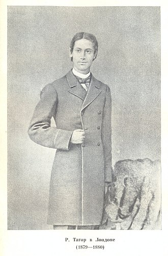
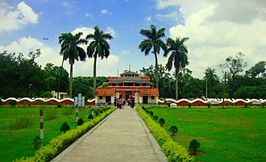
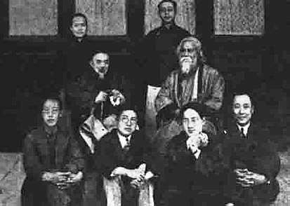

The youngest of 13 surviving children, Tagore (nicknamed "Rabi") was born on 7 May 1861 in the Jorasanko mansion in
Calcutta, the son of Debendranath Tagore (1817-1905) and Sarada Devi (1830-1875).
Tagore was raised mostly by servants; his mother had died in his early childhood and his father travelled widely.
The Tagore family was at the forefront of the Bengal renaissance. They hosted the publication of literary magazines;
theatre and recitals of Bengali and Western classical music featured there regularly. Tagore's father invited
several professional Dhrupad musicians to stay in the house and teach Indian classical music to the children.
Tagore's oldest brother Dwijendranath was a philosopher and poet. Another brother, Satyendranath, was the first
Indian appointed to the elite and formerly all-European Indian Civil Service. Yet another brother, Jyotirindranath,
was a musician, composer, and playwright. His sister Swarnakumari became a novelist. Jyotirindranath's wife
Kadambari Devi, slightly older than Tagore, was a dear friend and powerful influence. Her abrupt suicide in 1884,
soon after he married, left him profoundly distraught for years.
Tagore largely avoided classroom schooling and preferred to roam the manor or nearby Bolpur and Panihati, which the
family visited. His brother Hemendranath tutored and physically conditioned him—by having him swim the Ganges or
trek through hills, by gymnastics, and by practising judo and wrestling. He learned drawing, anatomy, geography and
history, literature, mathematics, Sanskrit, and English—his least favourite subject. Tagore loathed formal
education—his scholarly travails at the local Presidency College spanned a single day. Years later he held that
proper teaching does not explain things; proper teaching stokes curiosity:
After his upanayan (coming-of-age rite) at age eleven, Tagore and his father left Calcutta in February 1873 to tour
India for several months, visiting his father's Santiniketan estate and Amritsar before reaching the Himalayan hill
station of Dalhousie. There Tagore read biographies, studied history, astronomy, modern science, and Sanskrit, and
examined the classical poetry of Kālidāsa. During his 1-month stay at Amritsar in 1873 he was greatly influenced by
melodious gurbani and nanak bani being sung at Golden Temple for which both father and son were regular visitors. He
mentions about this in his My Reminiscences (1912)
The golden temple of Amritsar comes back to me like a dream. Many a morning have I accompanied my father to this
Gurudarbar of the Sikhs in the middle of the lake. There the sacred chanting resounds continually. My father, seated
amidst the throng of worshippers, would sometimes add his voice to the hymn of praise, and finding a stranger
joining in their devotions they would wax enthusiastically cordial, and we would return loaded with the sanctified
offerings of sugar crystals and other sweets.
He wrote 6 poems relating to Sikhism and a number of articles in Bengali children's magazine about Sikhism. Tagore
returned to Jorosanko and completed a set of major works by 1877, one of them a long poem in the Maithili style of
Vidyapati. As a joke, he claimed that these were the lost works of newly discovered 17th-century Vaiṣṇava poet
Bhānusiṃha. Regional experts accepted them as the lost works of the fictitious poet. He debuted in the short-story
genre in Bengali with "Bhikharini" ("The Beggar Woman"). Published in the same year, Sandhya Sangit (1882) includes
the poem "Nirjharer Swapnabhanga" ("The Rousing of the Waterfall").
Shelaidaha: 1878-1901

Because Debendranath wanted his son to become a barrister, Tagore enrolled at a public school in Brighton, East
Sussex, England in 1878. He stayed for several months at a house that the Tagore family owned near Brighton and
Hove, in Medina Villas; in 1877 his nephew and niece—Suren and Indira Devi, the children of Tagore's brother
Satyendranath—were sent together with their mother, Tagore's sister-in-law, to live with him. He briefly read law at
University College London, but again left school, opting instead for independent study of Shakespeare's plays
Coriolanus, and Antony and Cleopatra and the Religio Medici of Thomas Browne. Lively English, Irish, and Scottish
folk tunes impressed Tagore, whose own tradition of Nidhubabu-authored kirtans and tappas and Brahmo hymnody was
subdued. In 1880 he returned to Bengal degree-less, resolving to reconcile European novelty with Brahmo traditions,
taking the best from each. After returning to Bengal, Tagore regularly published poems, stories, and novels. These
had a profound impact within Bengal itself but received little national attention. In 1883 he married 10-year-old
Mrinalini Devi, born Bhabatarini, 1873-1902 (this was a common practice at the time). They had five children, two of
whom died in childhood.
In 1890 Tagore began managing his vast ancestral estates in Shelaidaha (today a region of Bangladesh); he was joined
there by his wife and children in 1898. Tagore released his Manasi poems (1890), among his best-known work. As
Zamindar Babu, Tagore criss-crossed the Padma River in command of the Padma, the luxurious family barge (also known
as "budgerow"). He collected mostly token rents and blessed villagers who in turn honoured him with
banquets—occasionally of dried rice and sour milk. He met Gagan Harkara, through whom he became familiar with Baul
Lalon Shah, whose folk songs greatly influenced Tagore. Tagore worked to popularise Lalon's songs. The period
1891-1895, Tagore's Sadhana period, named after one of his magazines, was his most productive; in these years he
wrote more than half the stories of the three-volume, 84-story Galpaguchchha. Its ironic and grave tales examined
the voluptuous poverty of an idealised rural Bengal.
Santiniketan:1901-1932

In 1901 Tagore moved to Santiniketan to found an ashram with a marble-floored prayer hall—The Mandir—an experimental
school, groves of trees, gardens, a library. There his wife and two of his children died. His father died in 1905.
He received monthly payments as part of his inheritance and income from the Maharaja of Tripura, sales of his
family's jewellery, his seaside bungalow in Puri, and a derisory 2,000 rupees in book royalties. He gained Bengali
and foreign readers alike; he published Naivedya (1901) and Kheya (1906) and translated poems into free verse.
In 1912, Tagore translated his 1910 work Gitanjali into English. While on a trip to London, he shared these poems
with admirers including William Butler Yeats and Ezra Pound. London's India Society published the work in a limited
edition, and the American magazine Poetry published a selection from Gitanjali. In November 1913, Tagore learned he
had won that year's Nobel Prize in Literature: the Swedish Academy appreciated the idealistic—and for
Westerners—accessible nature of a small body of his translated material focused on the 1912 Gitanjali: Song
Offerings. He was awarded a knighthood by King George V in the 1915 Birthday Honours, but Tagore renounced it after
the 1919 Jallianwala Bagh massacre. Renouncing the knighthood, Tagore wrote in a letter addressed to Lord
Chelmsford, the then British Viceroy of India, "The disproportionate severity of the punishments inflicted upon the
unfortunate people and the methods of carrying them out, we are convinced, are without parallel in the history of
civilised governments...The time has come when badges of honour make our shame glaring in their incongruous context
of humiliation, and I for my part wish to stand, shorn of all special distinctions, by the side of my country men."
In 1919, he was invited by the president and chairman of Anjuman-e-Islamia, Syed Abdul Majid to visit Sylhet for the
first time. The event attracted over 5000 people.
In 1921, Tagore and agricultural economist Leonard Elmhirst set up the "Institute for Rural Reconstruction", later
renamed Shriniketan or "Abode of Welfare", in Surul, a village near the ashram. With it, Tagore sought to moderate
Gandhi's Swaraj protests, which he occasionally blamed for British India's perceived mental - and thus ultimately
colonial - decline.[64] He sought aid from donors, officials, and scholars worldwide to "free village[s] from the
shackles of helplessness and ignorance" by "vitalis[ing] knowledge". In the early 1930s he targeted ambient
"abnormal caste consciousness" and untouchability. He lectured against these, he penned Dalit heroes for his poems
and his dramas, and he campaigned—successfully—to open Guruvayoor Temple to Dalits.